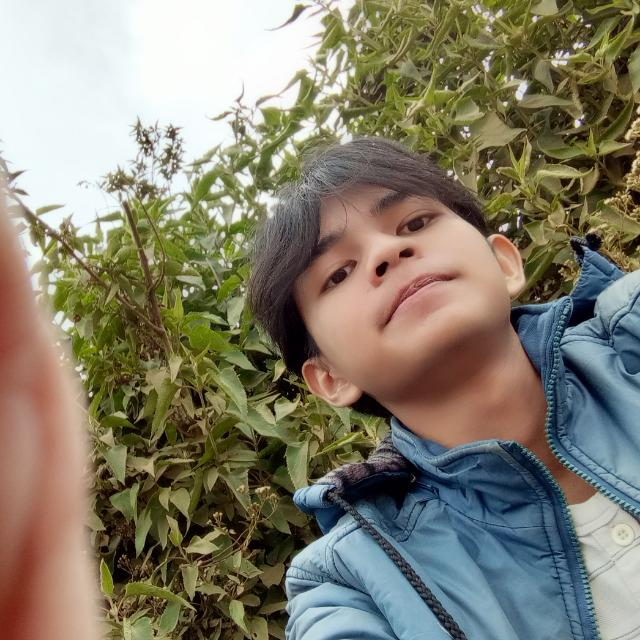

Halo, perkenalkan nama saya Thiraza Naufal Zhafran Windra. Saat ini saya merupakan mahasiswa aktif program studi S1 Pendidikan Teknik Informatika dan Komputer di Universitas Sebelas Maret (UNS). Saya memiliki ketertarikan yang besar di dunia teknologi, khususnya pada pengembangan web, aplikasi, dan Internet of Things (IoT). Di luar kegiatan akademik, saya sering mengisi waktu luang dengan bermain game, menonton film, serta melakukan eksperimen coding atau membuat project-project kecil untuk mengasah keterampilan teknis saya.
Selama masa perkuliahan, saya aktif dalam berbagai kegiatan organisasi dan inovasi. Saya tergabung sebagai Staf Kementerian Riset dan Data di BEM FKIP UNS, serta dipercaya menjadi Chief Product Officer (CPO) pada proyek SAVITA di Program Kewirausahaan WIBAWA UNS. Sebelumnya, saya juga ikut merancang konsep drone semi-otonom (ANDALA) pada ajang PKM-KC dan memiliki pengalaman magang di Enuma Technology. Pengalaman-pengalaman tersebut melatih saya untuk terus berkembang dalam desain UI/UX, pemrograman, serta kemampuan problem solving.